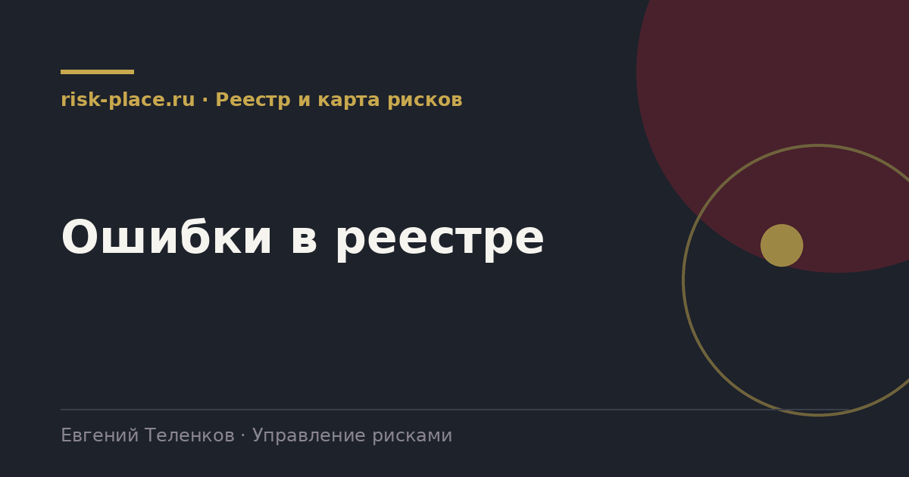

risk-
risk-Реестр как список тем
- Строки вида «санкции», «кадры», «ИТ». Лечится конструктором формулировки, переписыванием десяти самых важных строк, остальные подтягиваются по образцу
Главная · Библиотека · Реестр и карта рисков · Ошибки в реестре
Библиотека · Реестр и карта рисков
Мы видели десятки реестров. Дефекты повторяются, и они одинаковые в компании на сто человек и на двадцать тысяч.

Первый встречается почти всегда, шестой примерно в трети случаев.
Откройте реестр и проверьте пять вещей.
Если дефектов один-два, чинить точечно. Если четыре и больше, дешевле пересобрать. Пересборка это не переписывание двухсот строк, это риск-сессия с правлением, на которой выявляются двадцать пять действительно значимых рисков, и старый реестр закрывается целиком.
Практика показывает, что попытка починить полностью формальный реестр обходится дороже пересборки и заканчивается тем же формализмом, потому что сохраняет привычку заполнять таблицу вместо разговора о бизнесе.
Частые вопросы
Одна форма для любого вопроса
Расскажем о ближайших датах, предложим формат под ваш состав участников и назовем порядок бюджета.
Предпочитаете почту — напишите на info@risk-place.ru. Адрес: Москва, улица Скаковая, 32с2.